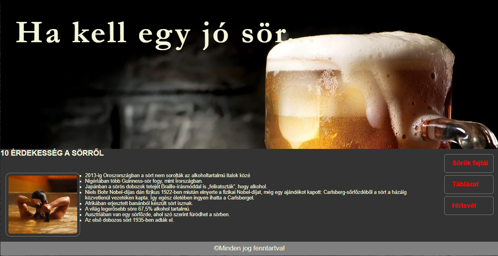
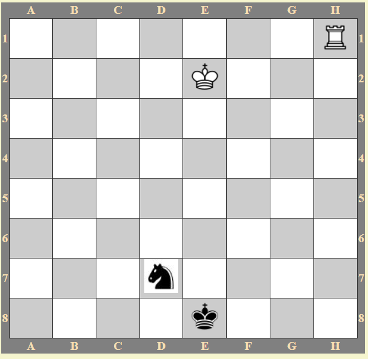
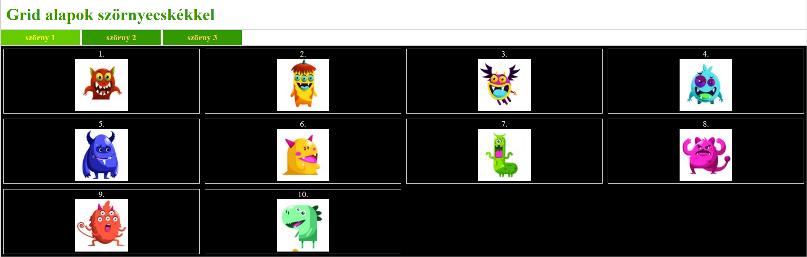
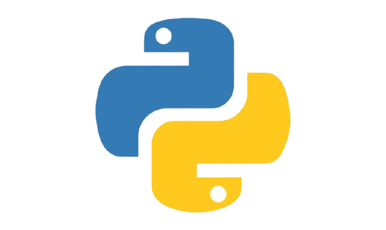

Webprogramozás - html

Órai feladat volt, amit alapvetőleg együtt kezdtünk, de én egyedül csináltam.
Önálló feladata volt órán. Nekünk kellett megcsinálni a négyzetrácsos hátteret, ami kicsit hosszadalmas volt, de maga a feladat nem volt olyan nehéz.
Itt kezdtük a Grid-et tanulni, alkalmazni feladatban. 3 oldalon kellett különböző helyekre elhelyezni a szönyecskéket.
Programozás - Python

A ciklusokat még a iskola legelején tanultuk. Itt még nem voltak nehezek a feladatok.
Ez is egy egyszerű feladat volt, ahol a ciklusokat gyakoroltuk.
Ez egy ágazati vizsga programozási feladat egy része volt.